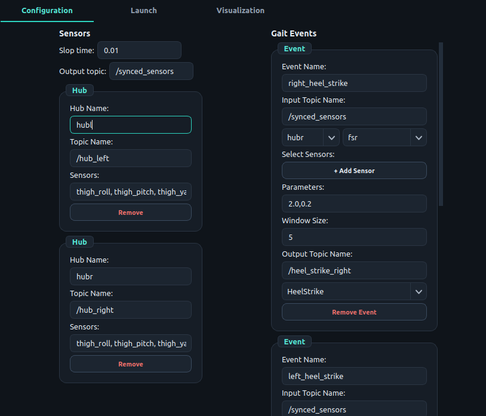
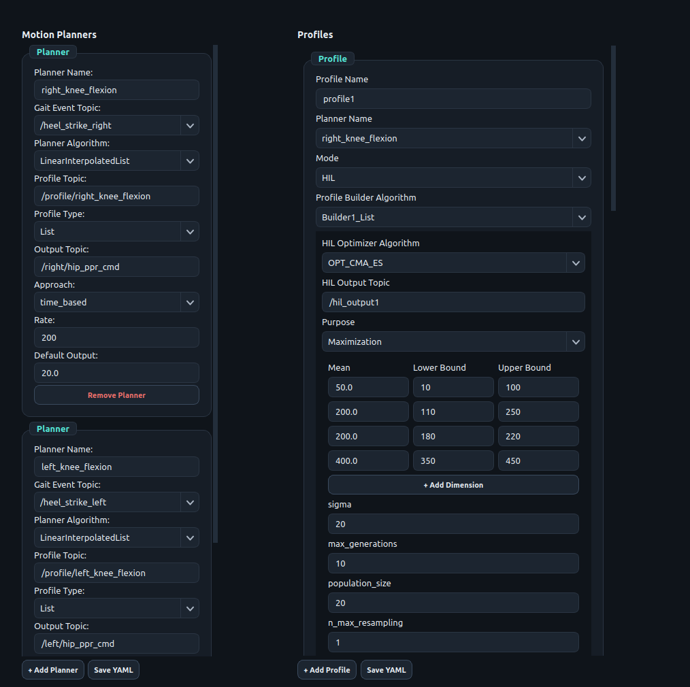
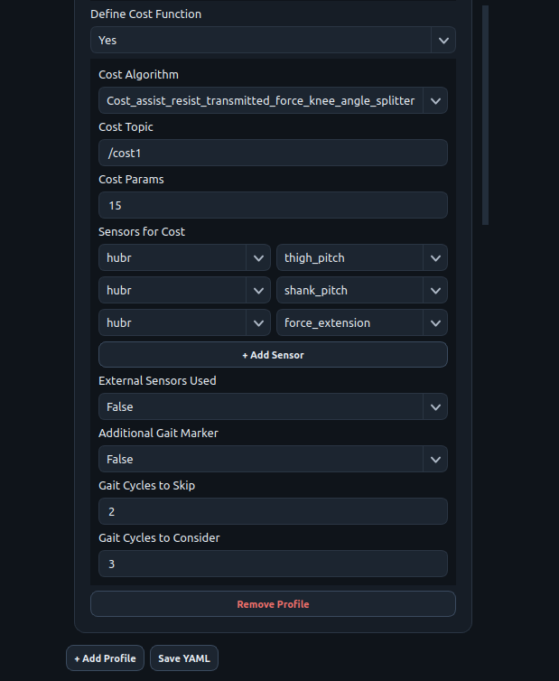

Configuration
A complete setup is six small files that refer to each other by name. Configure them left to right; each one uses names defined by the one before it.
| This value … | … must equal this value |
|---|---|
sketch setupPublisher(topic, …) | sensors.yaml → hubs.<hub>.topic |
| order and count of channels the board publishes | order and count of names in hubs.<hub>.sensors |
gait_events.yaml → <event>.output_topic | mplanner.yaml → <planner>.gait_event_topic |
mplanner.yaml planner key | profile.yaml → <profile>.planner_name |
mplanner.yaml → <planner>.output_topic | sketch setupActuation(topic, …) on the actuation board |
| algorithm names in any YAML | a file of that name (and a class of the same name) in its plug-in folder |
A. ESA sketch: sensing hub
A board is declared, not programmed: list the devices, then call the set-up functions in the order shown. Highlighted values are the ones you change.
#include "ESA.h"
SoftExoWalk exo;
DeviceConfig deviceList[] = {
// type addr/pin name extra_info1 misc1 misc2
{ I2C1, 0x4A2, "IMU_T"3, MAIN4, 95 }, // thigh IMU, 9 channels
{ I2C, 0x4A, "IMU_S", AUX1, 9 }, // shank IMU (same address, 2nd bus)
{ I2C, 0x2A, "LC_F", MAIN, -0.0243f, -299.094f }, // load cell: slope, offset
{ I2C, 0x2A, "LC_E", AUX1, -0.0242f, -299.096f },
{ AI, 34, "FSR", MEDIAN, 3 }, // median filter, window 3
};
const size_t deviceList_len = sizeof(deviceList) / sizeof(deviceList[0]);
void setup() {
exo.setupCommunication("wifi", "SSID", "PASSWORD", "192.168.1.10", 88886); // or: setupCommunication("usb")
if (exo.initializeSystem()) {
exo.setupNode("hub_right_node"7);
exo.setupPublisher("/hub_right"8, 1009); // topic, rate in Hz
exo.bootSystem(); // always last
}
}
void loop() {
exo.readSensorsData();
exo.publish(true); // true: rebuild the link automatically if the agent restarts
}| 1 | device type: AI, DI or I2C |
| 2 | GPIO pin (AI, DI) or 7-bit address (I²C) |
| 3 | short label for your reference |
| 4 | meaning depends on the type: see the table below |
| 5 | misc1 / misc2: meaning depends on the type and driver |
| 6 | Wi-Fi network, password, IP address of the host running the agent, UDP port |
| 7 | ROS 2 node name of this board (unique per board) |
| 8 | topic name: must equal hubs.<hub>.topic in sensors.yaml |
| 9 | publication rate (Hz); also the sampling rate used to design the analog filters |
What each field of a device row means
deviceList[] declares one device. The same seven fields serve every device type; four of them are read according to the type.| Field | Analog input AI | Digital input DI | I²C device I2C |
|---|---|---|---|
IP_typedevice type | AI | DI | I2C |
pin_or_addresswhere it is connected | ADC pin; GPIO 32–39 (ADC1) when the board uses Wi-Fi | GPIO pin | 7-bit address of the chip, e.g. 0x4A |
namelabel | Short label for your reference, e.g. "FSR", "HEEL", "IMU_T" | ||
extra_info1option | Filter: FILTER_NONE (default), MOV_AVG, MEDIAN, EXPONENTIAL, BUTTER2_LPF, BUTTER2_HPF, BUTTER2_BPF, BUTTER2_NOTCH | Pin mode: NORMAL (default), PDOWN (pull-down), PUP (pull-up) | Bus: MAIN (default): SDA 21, SCL 22AUX1: SDA 19, SCL 18 |
dev_misc_dataparameter 1 | MOV_AVG, MEDIAN: window, samples (≤ 50)EXPONENTIAL: α, 0–1 (smaller = smoother)BUTTER2_*: cut-off or centre frequency, Hz | n/a | BNO085: channels 3, 6 or 9 (other values give 3) NAU7802, AS5600: not used |
dev_misc_data2parameter 2 | BUTTER2_*: Q, required (0.707 = Butterworth)other filters: not used | n/a | n/a |
data_per_deviceset by ESA: omit | 1 | 1 | set by the driver: NAU7802 1 · AS5600 3 · BNO085 3, 6 or 9 |
| Example row | { AI, 34, "FSR", MEDIAN, 3 } | { DI, 26, "HEEL", PUP } | { I2C, 0x4A, "IMU_T", MAIN, 9 } |
Fields are positional; trailing fields may be left out and are then 0, which gives the defaults marked above. n/a: not used.
Butterworth filters are designed for the publication rate given to setupPublisher().
Driver calibration (NAU7802 slope and zero offset, AS5600 direction pin) is not part of the row; it is set in the driver's registration line (Table S2).
The I²C drivers shipped with ESA:
| I²C driver | Address | Channels (in order) | misc1 | misc2 |
|---|---|---|---|---|
| NAU7802 load-cell amplifier | 0x2A | force, N (tension only) | n/a (slope and offset are set in the driver's registration line) | n/a |
| BNO085 IMU | 0x4A, 0x4B | 3: roll, pitch, yaw (deg) · 6: + angular velocity x,y,z · 9: + linear acceleration x,y,z | 3, 6 or 9 | n/a |
| AS5600 magnetic encoder | 0x36 | angle (deg), angular speed (deg/s), cumulative position (counts) | n/a (direction pin GPIO 4, set in the driver) | n/a |
B. ESA sketch: actuation board
#include "ESA.h"
SoftExoWalk exo;
DeviceConfig deviceList[] = { }; // no sensors on this board
const size_t deviceList_len = sizeof(deviceList) / sizeof(deviceList[0]);
void setup() {
exo.setupCommunication("wifi", "SSID", "PASSWORD", "192.168.1.10", 8888);
if (exo.initializeSystem()) {
exo.setupNode("actuator_node");
// command topic actuator out x1 x2
exo.setupActuation("/right/hip_ppr_cmd"1, ACT_FESTO_VEAB_L262, 263, 174, 345);
exo.setupActuation("/left/hip_ppr_cmd", ACT_FESTO_VEAB_L26, 25, 5, 39);
exo.bootSystem();
}
}
void loop() {
exo.actuate(); // all actuators; exo.actuate("/right/hip_ppr_cmd") drives only that one
}| 1 | command topic: must equal output_topic of a planner in mplanner.yaml |
| 2 | identifier of a registered actuator driver (table below) |
| 3 | output: GPIO pin or I²C address |
| 4 | first driver-specific value (omit if unused) |
| 5 | second driver-specific value (omit if unused) |
| Actuator | out | x1 | x2 | Command (Float32) |
|---|---|---|---|---|
ACT_FESTO_VEAB_L26 proportional pressure valve | analog output GPIO (25, 26) | exhaust valve GPIO | pressure-feedback ADC GPIO (omit if none) | pressure set-point, kPa |
ACT_SG90_SERVO servo via PCA9685 | PCA9685 I²C address (e.g. 0x40) | PWM channel 0–15 | PWM frequency, Hz (50) | angle, 0–180° |
LED_TEST test output | GPIO | n/a | n/a | > 0 → on, otherwise off |
setup() runs. ESA then finds the driver for every device without any change to the library.| I²C sensor registry | Actuator registry | |
|---|---|---|
| Registration linein the driver header | REGISTER_I2C_SENSOR(addr, bus, INIT, READ, info1, info2) | REGISTER_ACTUATOR(ID, INIT, ACTUATE) |
| Key | bus and 7-bit address, e.g. MAIN + 0x2A | identifier of the ActuatorType enum in actuation.h, e.g. ACT_FESTO_VEAB_L26 |
| Selected by | a device row { I2C, addr, name, bus, … }, matched in initializeSystem() | setupActuation(topic, ID, out, x1, x2), resolved in bootSystem() |
| Driver receives | info1, info2 of the matching registration line | out, x1, x2 of the call (values ≤ 0 arrive as 0) |
| No matching entry | the device fails; initializeSystem() returns false | the actuator is skipped without an error |
| Capacity | 8 entries (MAX_I2C_SENS); the shipped lines use all 8 | one entry per identifier; up to 5 actuators per board |
| Entries in v1.0 | NAU7802: MAIN 0x2A, AUX1 0x2A; info1 slope, info2 zero offset, calibrated per busBNO085: MAIN 0x4A, MAIN 0x4B, AUX1 0x4A, AUX1 0x4B; no info valuesAS5600: MAIN 0x36, AUX1 0x36; info1 = 4, the direction pin | ACT_FESTO_VEAB_L26: proportional pressure valveACT_SG90_SERVO: servo through a PCA9685LED_TEST: test output |
| Adding a driver | a header–source pair with its registration lines (§2.5) | a header–source pair with its registration line, and the identifier added to ActuatorType (§2.6) |
An I²C entry is looked up once and then called through a cached pointer; actuator entries are indexed directly by their identifier.
- Call order:
setupCommunication→initializeSystem→setupNode→setupPublisher/setupActuation→bootSystem. The analog filters are designed whensetupPublisherruns, so it must come afterinitializeSystem. - USB transport: micro-ROS uses the serial port, so do not call
Serial.beginorSerial.printin the sketch. - Wi-Fi: analog inputs must use ADC1 pins (GPIO 32–39); ADC2 is unavailable while Wi-Fi is active.
- I²C buses:
MAIN= SDA 21 / SCL 22,AUX1= SDA 19 / SCL 18, 400 kHz. A bus–address pair can be used once. - A board may publish and actuate at once: call both
setupPublisherandsetupActuation, and inloop()callreadSensorsData(),publish(true)andactuate(). Up to 5 actuators per board. - An analog device whose name starts with
BATis treated as a battery monitor (×1.34 divider, clipped at 4.2 V). - Status LED on GPIO 23 blinks if a ROS entity cannot be created; the watchdog resets a stalled board after 3 s.
C. sensors.yaml: hubs and channel names
One entry per sensing board. List one name per published channel, in the exact order the board publishes them:
devices in deviceList order, each expanded to its channel count. These names are how every algorithm
refers to a signal.
hubs: hubr1: topic: "/hub_right"2 sensors: ["thigh_roll", "thigh_pitch", "thigh_yaw", "thigh_omega_x", "thigh_omega_y", "thigh_omega_z",3 "thigh_acc_x", "thigh_acc_y", "thigh_acc_z", "shank_roll", "shank_pitch", "shank_yaw", "shank_omega_x", "shank_omega_y", "shank_omega_z", "shank_acc_x", "shank_acc_y", "shank_acc_z", "force_flexion", "force_extension", "fsr"] hubl: topic: "/hub_left" sensors: [ ... same 21 names ... ] slop_time: 0.0104 output_topic: "/synced_sensors"
| 1 | hub key: used as [hub, name] in the other files |
| 2 | the board's publisher topic |
| 3 | channel names in publication order |
| 4 | seconds; messages from different hubs closer than this are combined into one sample |
| Device row (sketch) | Channels | Slots | Names in sensors.yaml |
|---|---|---|---|
| IMU_T (BNO085, misc1 = 9) | 9 | 0–8 | thigh_roll … thigh_acc_z |
| IMU_S (BNO085, misc1 = 9) | 9 | 9–17 | shank_roll … shank_acc_z |
| LC_F (NAU7802) | 1 | 18 | force_flexion |
| LC_E (NAU7802) | 1 | 19 | force_extension |
| FSR (AI) | 1 | 20 | fsr |
ros2 topic echo /hub_right --once shows range_max = number of channels and range_min = number of devices. The sensors list must have exactly range_max names. Keep output_topic: "/synced_sensors"; the cost node subscribes to that name.D. gait_events.yaml: event detectors
events: right_heel_strike1: input_topic: "/synced_sensors" sensors: [[hubr, fsr2]] algorithm: "HeelStrike"3 parameters: [2.0, 0.24] history_size: 55 output_topic: "/heel_strike_right"6
| 1 | event key: becomes the node name; one detector node runs per key |
| 2 | [hub, channel] pairs passed to the detector, in this order |
| 3 | detector plug-in: file and class name in algo/gait_events/ |
| 4 | list handed to the detector; meaning per algorithm (table) |
| 5 | sliding-window length in samples (PASE: Window Size) |
| 6 | topic on which an Int32 pulse (value 1) is published at each event |
| Detector | parameters | Fires when |
|---|---|---|
HeelStrike | [threshold, fraction] | the signal rises above threshold and stays there for fraction of the window, after a low window |
ZeroCrossingPosToNeg | [fraction] | the signal crosses from positive to negative and stays negative for fraction of the window |
ZeroCrossingNegToPos | [fraction] | the reverse crossing |
HeelStrike on an FSR signal (window 10 samples, fraction 0.3): an event needs k = 3 consecutive samples above the threshold while the detector is armed, and after an event it re-arms only once a full window lies below the threshold, so short spikes and chatter are rejected. The shipped gait_events.yaml uses history_size: 5 and fraction 0.2, for which one sample above the threshold is enough; the zero-crossing detectors apply the same rule to the sign of the signal. (b) One profile node and one motion planner node turn the walking speed into actuator set-points; the lookup table is an example in the row format of Builder_Nwaypoint_List. (c) The five waypoint pairs of (b) as interpolated by LinearInterpolatedList and PCHIPInterpolatedList; the PCHIP curve is the plug-in's interpolation with its inverted length check corrected (Known limitations of v1.0).E. mplanner.yaml: motion planners
planners: right_hip_extension1: gait_event_topic: "/right_hip_extension_start"2 planner_algorithm: "LinearInterpolatedList"3 profile_type: "List"4 profile_topic: "/profile/right_hip_extension"5 output_topic: "/right/hip_ppr_cmd"6 approach: "time_based"7 rate: 508 default_output: 20.09
| 1 | planner key: node name; referenced by planner_name in profile.yaml |
| 2 | event that (re)starts the profile: an output_topic from gait_events.yaml |
| 3 | planner plug-in in planner/; its name ends in List or Function; interpolation compared in Fig. S1c |
| 4 | List or Function: must match the suffix of the planner and of the builder |
| 5 | any unique name; the profile node publishes the profile here |
| 6 | Float32 command to the actuator: same topic as setupActuation |
| 7 | time_based: t = milliseconds since the event · gait_phase_based: t = latest value on gait_phase_topic (add that key) |
| 8 | command publication rate, Hz |
| 9 | command when idle, before the profile starts, after it ends, or on emergency stop |
| Topic (created per planner) | Type | Use |
|---|---|---|
/<planner>/manual_mode | Int32 | 1 = manual mode on, 0 = off (profiles are reset) |
/<planner>/manual_cmd | Float32 | in manual mode the output is default_output + manual_cmd |
/<planner>/profile_status | Float32MultiArray | [profile number, gait-cycle number], at every gait event |
F. profile.yaml: where the assistance profile comes from
Each profile feeds one planner. In Deployment mode the parameters come from a lookup table indexed by walking speed (and optionally intent); in HIL mode they come from an optimizer that is scored by a cost function.
| Key | Mode | Meaning |
|---|---|---|
planner_name | both | planner key in mplanner.yaml |
mode | both | Deployment or HIL |
profile_builder_algo | both | builder in algo/builder/ (table below); suffix must match the planner |
speed_required, speed_topic | Deployment | use walking speed (Float32 topic) to index the table |
intent_required, intent_topic | Deployment | also index by intent (Float32); intent 0 triggers an emergency stop |
lookup_algo, lookup_table | Deployment | plug-in in algo/lookup_algo/; JSON file in lookup_table/ (name without .json) |
rate | Deployment | profile republication rate, Hz (default 50) |
hil_algo | HIL | optimizer in algo/hil_optimizer/ (upper-case name) |
hil_output_topic | HIL | topic on which candidates are sent to the profile node (any unique name) |
hil_hyperparams | HIL | optimizer settings (next table) |
cost_algo, cost_params | HIL | cost plug-in in algo/cost/; list passed to its constructor |
cost_topic | HIL | topic on which [profile number, cost] is returned (any unique name) |
sensors | HIL | [hub, channel] pairs given to the cost function, in this order |
gait_cycles_to_skip, _to_consider | HIL | cycles discarded after each new candidate, then cycles averaged into one cost |
external_sensors_topic | HIL, optional | Float32MultiArray stream (e.g. metabolic, EMG) used instead of internal sensors |
additional_gait_marker_topic | HIL, optional | Int32 marker appended as an extra column for the cost function |
| Optimizer | hil_hyperparams |
|---|---|
OPT_CMA_ES | mean (start point), bounds ([[min,max],…]), sigma, maximize, max_generations, population_size, n_max_resampling |
OPT_BAYESIAN | pbounds ({name: [min,max], …}; key order = parameter order), maximize, max_iters, kind (ei, ucb, poi), xi, kappa, random_state |
| Builder | Input values (from lookup table or optimizer) | Shape |
|---|---|---|
Builder1_List | [start, peak_t, peak_value, end] | triangle |
Builder2_List | [start, t1, v1, t2, v2, end] | trapezoid |
Builder_Nwaypoint_List | [start, t1, v1, …, tN, vN, end] | any piecewise shape |
Builder1_Function | [start, c0, c1, …, cn, end] | polynomial (Function planners); see App. A for v1.0 |
Builder2_List: six entries in mean and bounds, or six keys in pbounds. Times are in milliseconds for time_based planners and in gait-phase units for gait_phase_based ones. The List builders anchor the profile at their own default value (20) at the start and end times; this is independent of the planner's default_output.G. Lookup tables
{ "3.5": [50.0, 200.0, 500.0, 600.0, 500.0, 800.0], ← speed -> builder inputs
"4.0": [200.0, 300.0, 100.0, 500.0, 150.0, 800.0] }{ "0.0": [500.0, 600.0, 100.0, 800.0], ← intent -> builder inputs ...
"1.0": { "3.5": [500.0, 600.0, 100.0, 800.0], ← ... or intent -> speed -> inputs
"4.0": [400.0, 550.0, 150.0, 800.0] } }Fig. S1b follows one row of such a table to the encoded profile. Lookup_Speed_Segmentwise uses the nearest speed key (clamped at the ends);
Lookup_Speed_Interpolated interpolates between keys; Lookup_Speed_Intent_Segmentwise reads the
two-level table. Write keys exactly as floats ("1.0", not "1"): incoming values are "
"matched as text.
H. Configuring in PASE (Configuration tab)
The four panels edit the four YAML files, left to right. Lists of hubs, channels, events, planners and algorithms are filled from the saved files and from the plug-in folders, so you select rather than type.
- Sensors: + Add Hub; enter Hub Name, Topic Name and the channel names in Sensors (comma-separated, publication order); set Slop time and Output topic; press Save YAML.
- Gait Events: + Add Event; set Event Name, Input Topic Name; choose hub and channel under Select Sensors (+ Add Sensor for more); pick the algorithm; fill Parameters and Window Size; set Output Topic Name; Save YAML.
- Motion Planner: + Add Planner; choose the Gait Event Topic and Planner Algorithm from the lists; set Profile Type, Profile Topic, Output Topic, Approach (
time_based; phase-based planners are set in the YAML file), Rate, Default Output; Save YAML. - Profile: + Add Profile; choose Planner Name and Mode. For Deployment set the builder, Speed/Intent Required, Lookup Table, Lookup Algorithm, Rate. For HIL choose the optimizer, add one + Add Dimension row (Mean / Lower Bound / Upper Bound) per builder input, then under Define Cost Function set the cost algorithm, Cost Params, Cost Topic, Sensors for Cost and the gait cycles to skip and consider; Save YAML.

 (a) Motion Planners and Profiles |  (b) cost function of the profile |